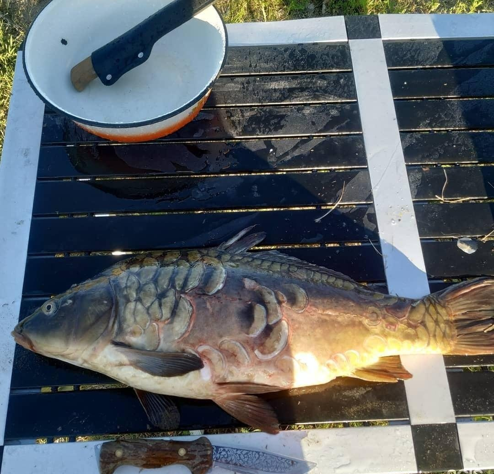
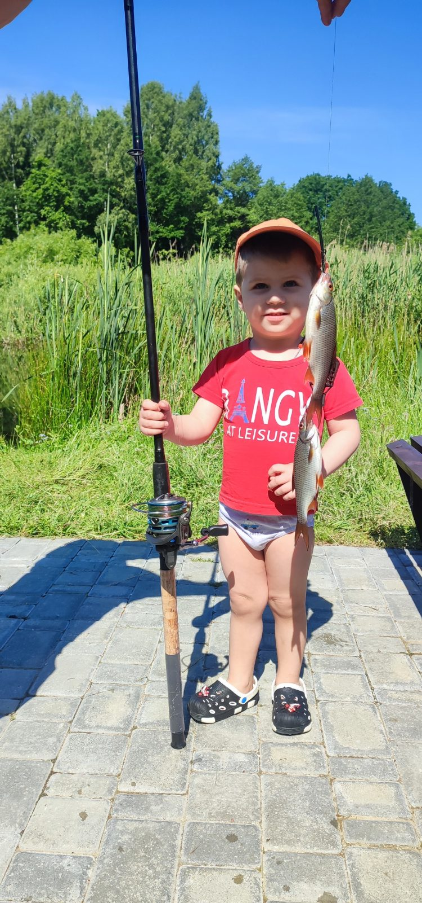

Рыбалка · 1 000 ₽
Рыба, которую здесь вырастили
Больше 8 лет в усадьбе восстанавливают популяцию рыбы: выращивают мальков в трёх искусственных озёрах и выпускают в естественную среду.
ОкуньПлотваКарасьКарпСазанЩукаТолстолобикАмурСомЛинь
- Для гостей, которые забронировали беседку или дом
- С 8:00 до 21:00, на оборудованных местах у беседок с выходом к воде
- Ночная рыбалка запрещена; о рыбалке нужно сказать администратору